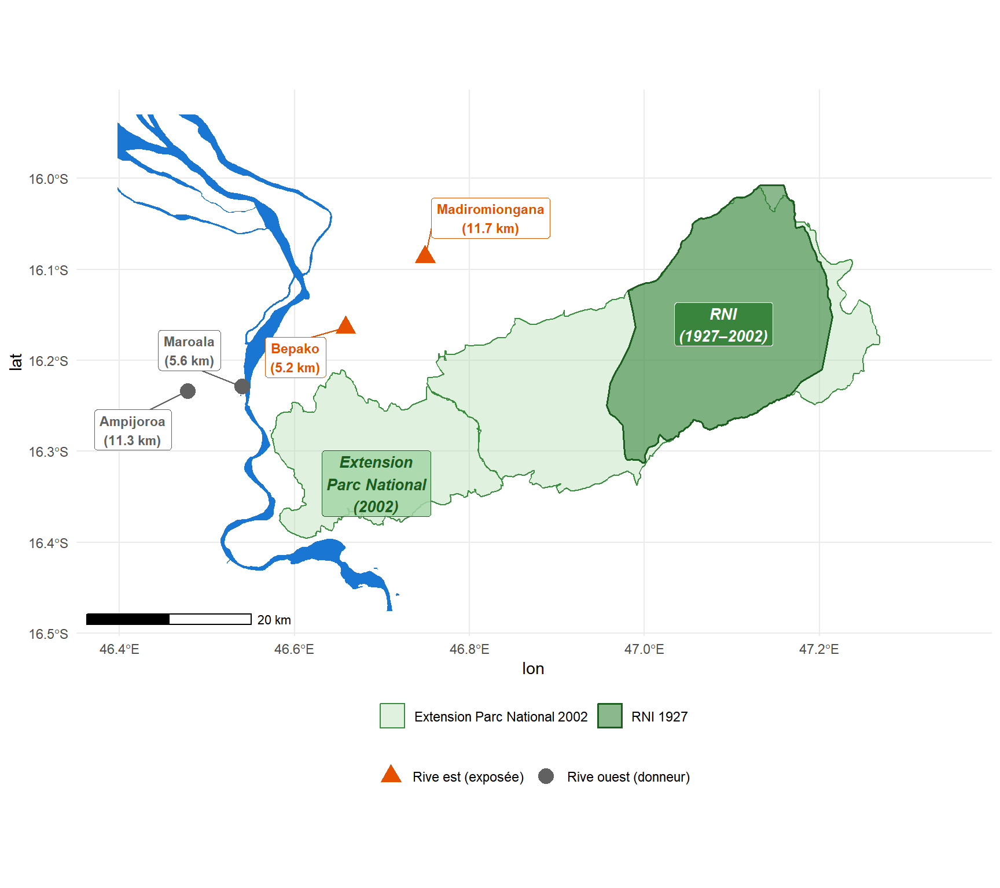
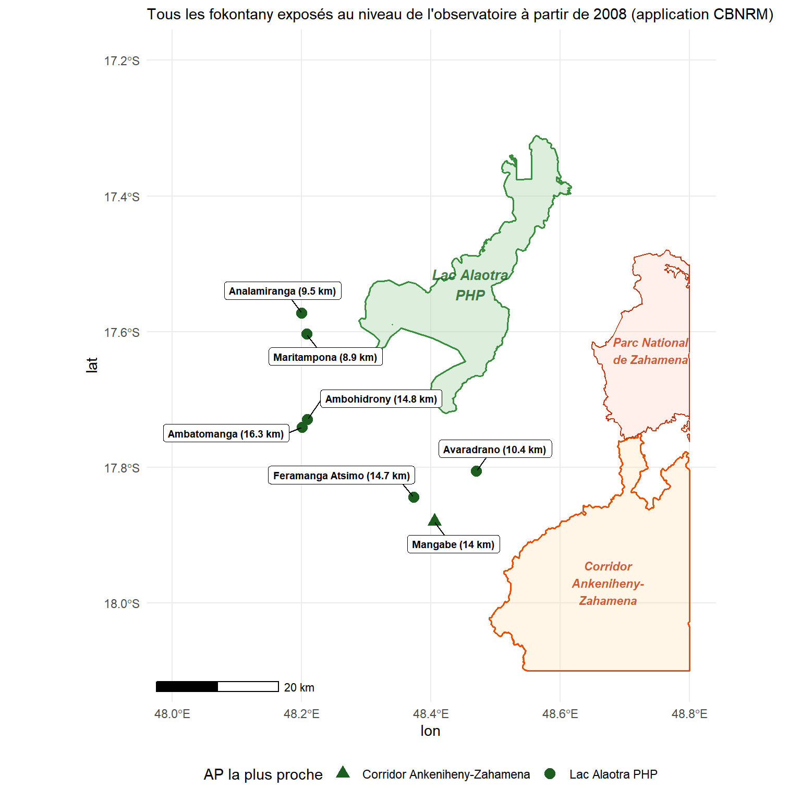
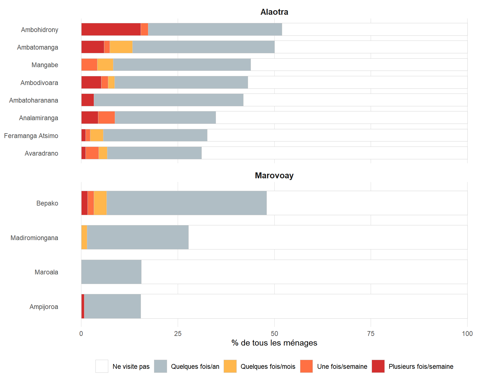

| Fokontany | Rive | Dist. à la RNI (pré-2002) | Dist. au PN (post-2002) | Rôle |
|---|---|---|---|---|
| Bepako | East | 33 km | 5.2 km | Exposé (à partir de 2003) |
| Madiromiongana | East | 25.1 km | 11.7 km | Exposé (à partir de 2003) |
| Ampijoroa | West | 51.2 km (+ traversée de rivière) | 11.3 km (+ traversée de rivière) | Donneur (contrôle) |
| Maroala | West | 44.7 km (+ traversée de rivière) | 5.6 km (+ traversée de rivière) | Donneur (contrôle) |
3 Stratégie d’identification
Comment nous estimons l’effet causal des aires protégées sur le revenu des ménages
La question centrale de cette étude est de savoir si la création ou l’extension d’aires protégées a causé des changements dans le revenu des ménages, ou si les différences de revenus observées reflètent simplement des tendances préexistantes. Ce chapitre explique comment nous tentons d’isoler les effets causaux.
La stratégie comporte quatre parties. Premièrement, nous définissons deux expériences naturelles proposant des comparaisons exposition–contrôle plausibles (Chapitre 4). Deuxièmement, nous expliquons comment le dispositif d’enquête contraint l’unité d’analyse (Chapitre 5). Troisièmement, nous décrivons la méthode statistique utilisée pour construire des trajectoires de revenu contrefactuelles (Chapitre 6). Quatrièmement, nous présentons brièvement trois cas supplémentaires qui étendent l’analyse (Chapitre 7).
4 Deux expériences naturelles
Nous exploitons deux événements survenus pendant la période d’enquête SOR où une AP nouvelle ou étendue a commencé à imposer des restrictions à des communautés précédemment enquêtées. Les deux cas diffèrent dans leur modèle de gouvernance de conservation — exclusion stricte à Ankarafantsika versus gestion participative au Lac Alaotra — offrant une comparaison intégrée de la façon dont le type de gouvernance médiatise les effets sur le revenu.
4.1 Marovoay et le Parc National d’Ankarafantsika (2003)
4.1.1 L’extension du parc en 2002
Comme illustré sur Figure 4.1, le Parc National d’Ankarafantsika a été formellement étendu par le Décret 2002-798 du 7 août 2002, fusionnant l’ancienne Réserve Naturelle Intégrale (60 500 ha, créée en 1927) avec une réserve forestière en un parc national de 136 500 ha sous catégorie II UICN (conservation stricte de la nature).
Nous fixons l’année d’exposition à 2003, qui est la première année complète d’enquête ROS suivant le décret. Nous testons également si l’utilisation de 2002 au lieu de 2003 modifie le résultat estimé et trouvons une incidence négligeable.
Selon la littérature grise concordante que nous avons examinée, nous considérons que l’extension de 2002 a été le premier événement à imposer des restrictions d’utilisation des terres contraignantes aux communautés adjacentes à la zone de réserve forestière. Les classements antérieurs avaient des implications de facto très différentes :
- La Réserve Naturelle Intégrale de 1927 couvrait le plateau intérieur au nord-est, géographiquement séparé des communautés de Marovoay.
- La réserve forestière de 1929 n’était pas une zone de conservation mais une réserve de bois et de ressources. Les analyses de cette période n’ont trouvé aucune application effective.
Le reclassement de 2002 a fusionné ces zones en un seul parc national où l’agriculture sur brûlis (tavy), la production de charbon de bois et l’extraction de produits forestiers non ligneux étaient explicitement interdits et, de manière cruciale, mis en vigueur.
4.1.2 La rivière Betsiboka comme barrière naturelle
L’observatoire de Marovoay comprend quatre fokontany (villages) séparés par la rivière Betsiboka — un cours d’eau important à écoulement permanent. La traversée n’est possible que dans certaines conditions hydrologiques, nécessitant souvent de longs détours ou un transport en bateau coûteux. En pratique, les flux de personnes, de biens et de services s’écoulent le long de l’axe aval de Marovoay plutôt que de traverser la rivière.
Cette caractéristique géographique crée une expérience naturelle : les communautés de la rive est ont un accès pédestre direct au parc, tandis que les communautés de la rive ouest font face à une pénalité d’accès substantielle.

4.1.3 Validation comportementale à partir de la ré-enquête 2025
L’assignation d’exposition repose sur l’hypothèse que la rivière Betsiboka sépare effectivement les communautés en groupes « exposés » et « non exposés ». La ré-enquête 2025 fournit un test direct de cette hypothèse.
| Interaction avec l'AP par Fokontany | |||||
| Observatoire de Marovoay, ré-enquête 2025 (N = 519 ménages) | |||||
| Site | Rive | N | % visite zone AP | % usage extractif | % cite 'interdit' |
|---|---|---|---|---|---|
| Bepako | Est | 123 | 49 | 11 | 19 |
| Madiromiongana | Est | 137 | 28 | 9 | 36 |
| Ampijoroa | Ouest | 143 | 15 | 1 | 11 |
| Maroala | Ouest | 116 | 16 | 2 | 2 |
Trois résultats soutiennent l’assignation d’exposition : (1) l’asymétrie de visite (38% des ménages de la rive est visitent le parc contre 15% à l’ouest) ; (2) la conscience de l’interdiction (34% des non-visiteurs à Madiromiongana citent l’interdiction légale) ; (3) la distance comme barrière dominante (54% des non-visiteurs sur les deux rives citent la distance).
4.2 Lac Alaotra et le Paysage Protégé (2008)
4.2.1 Un modèle de conservation différent
Le Lac Alaotra est le plus grand lac de Madagascar et un habitat critique pour le lémur des marais d’Alaotra (Hapalemur alaotrensis). La Convention de Ramsar a inscrit le site en 2003. En 2015, le lac et ses zones marécageuses ont été officiellement désignés comme Paysage Harmonieux Protégé (PHP, 425 km², catégorie V UICN). L’application via des accords de gestion communautaire des ressources naturelles (CBNRM) et des transferts de gestion s’est intensifiée à partir d’environ 2008 sous la gestion du Durrell Wildlife Conservation Trust. Nous fixons l’année d’exposition à 2008.
La différence clé par rapport à Ankarafantsika est la gouvernance : plutôt qu’une application exclusive interdisant toute extraction de ressources, le cadre CBNRM d’Alaotra régule l’utilisation du lac-marais à travers des règles d’accès gérées communautairement, des fermetures saisonnières de pêche et des accords de restauration des habitats.
4.2.2 Pourquoi toutes les communautés d’Alaotra sont exposées
Contrairement à Marovoay, il n’y a pas de barrière naturelle séparant les communautés « exposées » des communautés « non exposées » à Alaotra. Les sept fokontany de l’observatoire affichent tous des interactions modestes mais non négligeables avec l’écosystème lac-marais. Nous traitons donc l’ensemble de l’observatoire comme une unité unique exposée, agrégée à une moyenne de site.

4.2.3 Validation comportementale à partir de la ré-enquête 2025
| Interaction avec l'AP par Fokontany | ||||
| Observatoire d'Alaotra, ré-enquête 2025 (N = 507 ménages) | ||||
| Site | N | % visite zone | % extractif | % pêche/chasse |
|---|---|---|---|---|
| Ambatomanga | 68 | 51 | 26 | 21 |
| Ambodivoara | 58 | 45 | 21 | 10 |
| Ambohidrony | 52 | 54 | 21 | 13 |
| Ambatoharanana | 31 | 45 | 13 | 10 |
| Analamiranga | 46 | 41 | 13 | 4 |
| Mangabe | 73 | 47 | 8 | 5 |
| Avaradrano | 90 | 38 | 7 | 0 |
| Feramanga Atsimo | 89 | 37 | 3 | 0 |

5 Des ménages aux villages
5.1 La contrainte du panel rotatif
Le SOR peut être interprété comme un panel rotatif plutôt qu’un panel de réinterviews strictes. Cette distinction est cruciale pour l’estimation. Sur un horizon de 10 ans, l’attrition cumulée atteint environ 80% de la cohorte initiale. En conséquence, nous ne pouvons pas suivre les mêmes ménages dans le temps.
Le dispositif rotatif préserve cependant la représentativité transversale à chaque vague d’enquête : le remplacement aléatoire des ménages sortants garantit que les statistiques village-année estiment le même paramètre de population d’une vague à l’autre.
5.2 Agrégation au niveau du village
Nous analysons donc les données au niveau du village (fokontany), en agrégeant les revenus des ménages en médianes village-année. La médiane est préférée à la moyenne car les distributions de revenus ruraux sont asymétriques à droite.
5.3 Variable de résultat
La variable de résultat principale est le logarithme du revenu équivalisé des ménages, construit en quatre étapes :
- Revenu total (
revtot) : somme des composantes de revenus. - Équivalisation selon l’échelle OCDE modifiée : \(\text{equiv} = 1 + 0{,}5 \times (\text{adultes supplémentaires}) + 0{,}3 \times (\text{enfants de moins de 14 ans})\).
- Winsorisation aux 1er et 99e percentiles intrayear.
- Transformation logarithmique : \(y_{it} = \log(\text{revenu équivalisé}_{it} + 1)\).
6 Construction du contrefactuel
6.1 Sélection des communautés donneurs
Le contrefactuel est construit à partir de pools de donneurs — des villages d’observatoires ruraux non exposés à aucune AP pendant la période d’étude. Nous commençons avec 9 observatoires donneurs fournissant environ 60 sites donneurs à travers le pays.
Un audit spatial systématique (Annexe B) vérifie si ces donneurs sont eux-mêmes adjacents à des AP créées durant 1999–2014 :
| Statut | Observatoires |
|---|---|
| « Propres » | Antsirabe (02), Tsiroanomandidy (13), Ambovombe (16), Mahanoro (25), Itasy (41) |
| Aussi exposés | Antsohihy (12), Farafangana (15), Toliara Nord (23), Fénérive Est (24) |
6.2 Contrôle synthétique généralisé
6.2.1 Intuition
La méthode standard de différence-en-différences (DiD) suppose que les communautés exposées et de contrôle auraient suivi des tendances parallèles en l’absence de l’AP. Le contrôle synthétique généralisé (gsynth) de Xu (2017) assouplit cette hypothèse. Au lieu d’exiger des tendances parallèles, il permet à chaque village de suivre sa propre trajectoire conduite par des facteurs non observés — la méthode apprend ensuite ces facteurs à partir des données pré-traitement et les utilise pour projeter ce qui se serait passé après la création de l’AP.
6.2.2 Spécification formelle
Pour chaque unité exposée \(i\) en période post-traitement \(t\), gsynth modélise le résultat comme :
\[Y_{it} = \alpha_i + \xi_t + \boldsymbol{\lambda}_i' \boldsymbol{f}_t + D_{it} \cdot \delta_{it} + \varepsilon_{it}\]
où \(\alpha_i\) sont des effets fixes unité, \(\xi_t\) des effets fixes temps, \(\boldsymbol{\lambda}_i' \boldsymbol{f}_t\) des effets fixes interactifs, et \(D_{it}\) l’indicateur de traitement. La sélection du nombre de facteurs utilise la validation croisée leave-one-out sur \(r \in \{0, 1, 2, 3, 4, 5\}\).
6.2.3 Deux modèles séparés
Nous estimons deux modèles distincts :
- Modèle Marovoay : unités exposées = Madiromiongana et Bepako (rive est, à partir de 2003) ; donneurs = tous les autres sites.
- Modèle Alaotra : unité exposée = observatoire d’Alaotra agrégé (à partir de 2008) ; donneurs = tous les sites non-Alaotra.
6.3 Inférence avec peu d’unités exposées
Une contrainte fondamentale est le petit nombre d’unités exposées : 2 sites pour Marovoay, 1 pour Alaotra. Pour Marovoay, la p-valeur minimale atteignable est \(1/6 \approx 0{,}167\) (test unilatéral). Nous rapportons les intervalles de confiance bootstrap gsynth et les p-valeurs tout au long, mais les interprétons à la lumière de ce plafond de puissance.
6.4 Dispositifs complémentaires au niveau des ménages
Nous complétons l’analyse gsynth par deux dispositifs de coupes transversales répétées (CTR) au niveau des ménages basés sur le cadre Callaway–Sant’Anna (Callaway et Sant’Anna 2021) avec panel = FALSE. Pour chaque observatoire, nous construisons un indicateur de traitement binaire à partir d’un des deux contrastes d’intensité d’exposition intra-observatoire : l’exposition géographique (distance à la limite de l’AP ou assignation rive) et l’exposition comportementale (part de ménages déclarant au moins un usage extractif dépendant de l’AP en 2025).
| CTR secondaire : classifications d'intensité d'exposition | ||||
| Site | Distance / rive | % extractif (2025) | Géographique | Comportemental |
|---|---|---|---|---|
| Marovoay | ||||
| Bepako | est | 11.4 | traité | — |
| Madiromiongana | est | 8.8 | traité | — |
| Ampijoroa | ouest | 0.7 | contrôle | — |
| Maroala | ouest | 1.7 | contrôle | — |
| Alaotra | ||||
| Ambodivoara-Maritampona | 8.9 km | 20.7 | traité | traité |
| Ambatoharanana-Analamiranga | 9.5 km | 13.0 | traité | traité |
| Avaradrano | 10.4 km | 6.7 | traité | contrôle |
| Mangabe | 14.0 km | 8.2 | contrôle | contrôle |
| Feramanga Atsimo | 14.7 km | 3.4 | contrôle | contrôle |
| Ambohidrony | 14.8 km | 21.2 | contrôle | traité |
| Ambatomanga | 16.3 km | 26.5 | contrôle | traité |
7 Extensions à trois observatoires supplémentaires
Trois paires observatoire–AP supplémentaires identifiées lors de l’audit du pool de donneurs fournissent des extensions de l’analyse principale :
| Observatoire | Aire protégée | UICN | Année | Gouvernance |
|---|---|---|---|---|
| Farafangana | Corridor Forestier Ambositra-Vondrozo (CFAV) | V | 2006 | Corridor de hautes terres multifonctionnel |
| Toliara Nord | Amoron’i Onilahy | V | 2007 | Protections côtières et forêt sèche |
| Fénérive Est | Réserve de Tampolo | IV | 2007 | Petite forêt de recherche (~7,3 km²) |